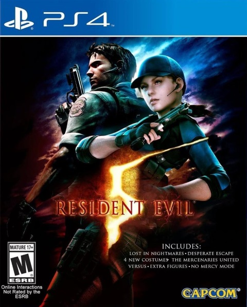

|  |
Resident Evil 5Resident Evil 5, conhecido no Japão como Biohazard 5, é um jogo eletrônico de tiro em terceira pessoa desenvolvido e publicado pela Capcom. É o sétimo título principal da série Resident Evil e foi lançado para PlayStation 3 e Xbox 360 em março de 2009 e depois para o Microsoft Windows em setembro do mesmo ano.
R$ 120,30
|